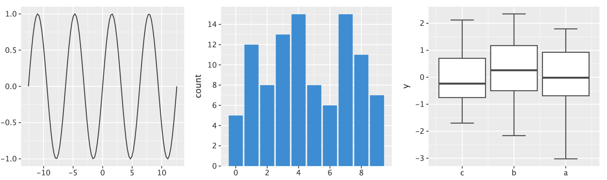
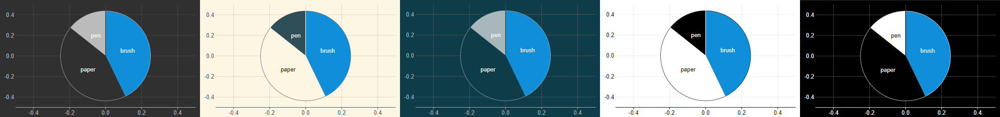
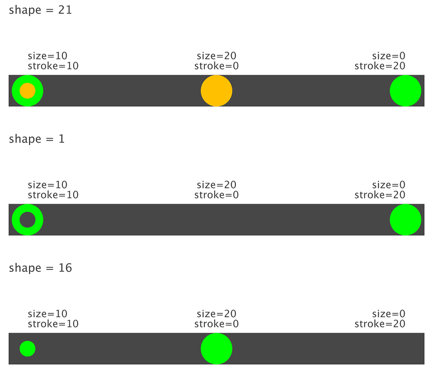
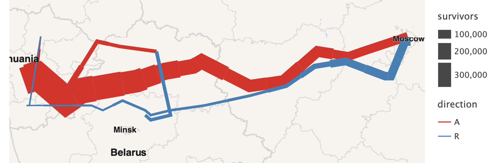
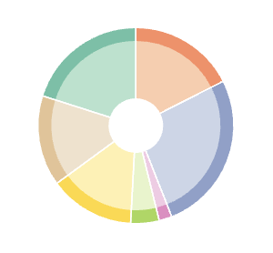

What is new in 4.0.0¶
The major version was bumped to 4 due to a major package refactoring that the project has undergone.
This refactoring doesn’t affect the Python API, however, as a result of package names changed,
Lets-Plot v4.0.0 is partially incompatible with Lets-Plot Kotlin API versions 4.4.1 and earlier.
A Number of Geometry Defaults Changed¶
The default qualitative color palette is now Color Brewer “Set1” (was “Set2”).
Slightly bigger default size of points and width of lines.
Flavor-aware default colors for points, lines etc.


See: example notebook.
{kind=link}
{kind=link}
Size of points is slightly adjusted to match the width of a line of the same “size”.

{kind=link}
Support for Variadic Line Width and/or Color in geom_line() and geom_path()¶
{kind=link}

See: example notebook.
Parameter "size_unit" in geom_pie()¶
A way to specify size of the pie in units relative to the plot size.
See: example notebook.
Stroke and Spacers in geom_pie()¶
{kind=link}

See: example notebook.
New theme_void(), Geometries and Statistics¶
Change Log¶
See CHANGELOG.md for other changes and fixes.